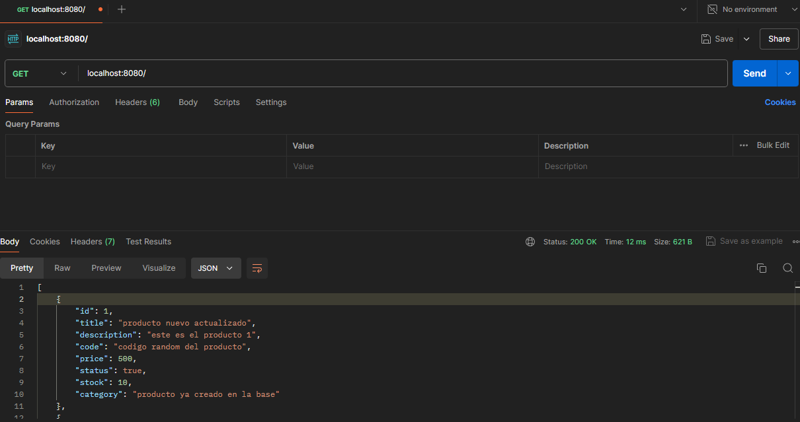
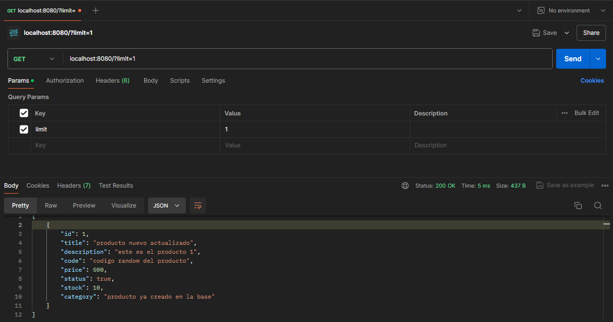
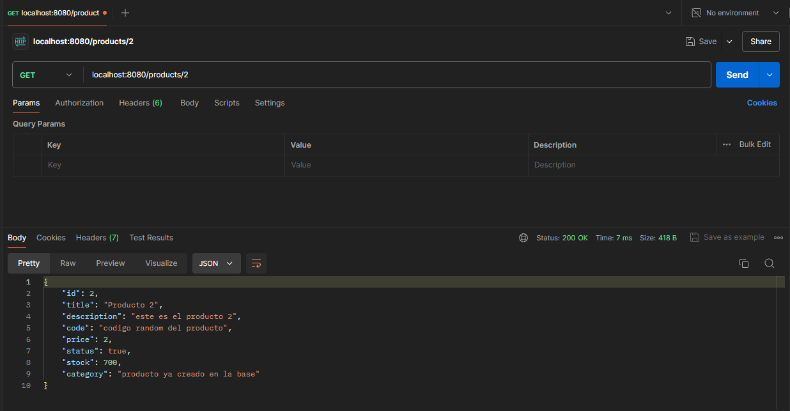
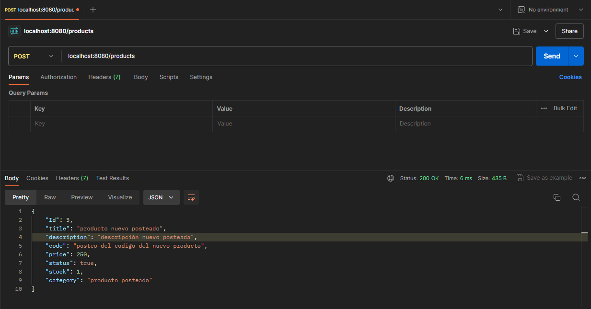
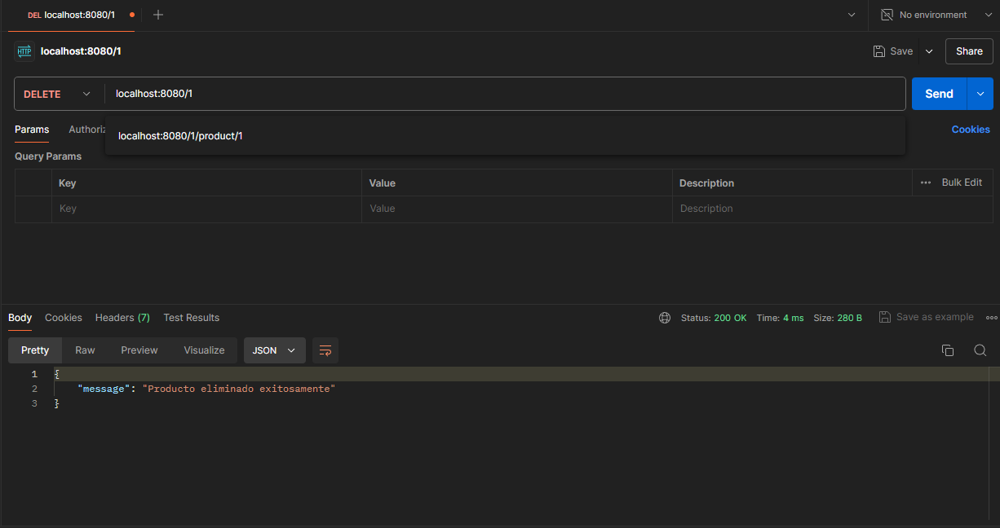

Proyecto Final: primera entrega. Alumno: Lautaro Cruz
Proyecto realizado con:
node.js
Express
FileSystem
Postman
Git
Método de instalación:
(en consola o utilizando git bash) git clone https://github.com/LautaroCruz1/proyectoCoder-1.git
cd proyectoCoder-1-1
npm i express
Método de ejecución:
npm init
modificar dentro de package.json la sección: "start": "node --watch app.js"
ejecutar npm start (en consola)
el código esta ejecutado en localhost:8080
Demostración del código con Postman:
Products
método Get:
localhost:8080/
devuelve todos los productos de la base de datos

tambíen puede limitarse la busqueda utilizando ?limit= x dentro de la url

método Get (productos por Id):
localhost:8080/:pid
devuelve los productos con el id indicado en la url, en este caso el producto con id:2

método Post
localhost:8080/products
en éste caso postearemos un producto con el titulo: "producto nuevo posteado" y nuevos atributos
el id de los productos que añadamos se incrementará automaticamente

método Put
localhost:8080/:pid
en éste caso vamos a modificar los atributos del producto mediante las pestañas body, raw y seleccionamos json
siguiendo ésta estructura cambiaremos los atributos que queramos:
producto.title = title || producto.title;
producto.description = description || producto.description;
producto.code = code || producto.code;
producto.price = price || producto.price;
producto.status = status || producto.status;
producto.stock = stock || producto.stock;
producto.category = category || producto.category;
vamos a modificar un producto ya creado en la base, cuyo id es 2

método Delete:
localhost:8080/:pid
mediante éste método borraremos un producto de nuestra base mediante su id
en éste caso borraremos el producto cuyo id es 3
